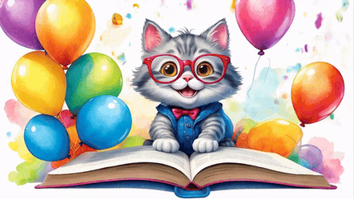

Naučte se německá slovíčka
snadně a rychle!
Naučte se německá slovíčka
snadně a rychle!
Tato webová stránka slouží jen pro studium.
Zahrajte si pexeso a naučte se
německá slovíčka zábavně!

Stejně jako každá kapka deště,
každé nové německé slovo tě přiblíží
k ovládnutí jazyka a novým příležitostem!
Stejně jako noc přináší nový den
tě každé německé slovo, které se naučíš,
přiblíží k tvému cíli!
Tento web byl vytvořen pro zjednodušení učení německých slovíček.
Cílem tohoto webu je umožnit ostatním naučit se slovíčka a to bez reklam a jiných rušivých elementů.
Stadartní systém učení slovíček, který je vytvořen podle předešlého webu.
Psaní překladu slovíčka do pole pod ním.
Slovíčka lze i poslouchat pro lepší zapamatování a rozpoznání při konverzacích.
Vyzkoušejte nový systém, který slouží pro zopakování naučených slovíček.
Otáčejte postupně karty s českými a německými slovíčky a hledejte dvojice.
Hrajte sami nebo proti počítači.
Podívejte se na všechna slovíčka z vybrané lekce.
Tento systém je integrován i do Standartního webu, kde lze vidět i statistiky dané relace.
Vytvořte si vlastní soubor se slovíčky, který lze na tomto webu pro každou relaci nahrát a využít.
Umožnění větší flexibility učení.